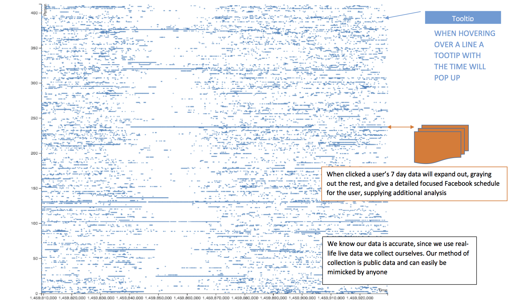
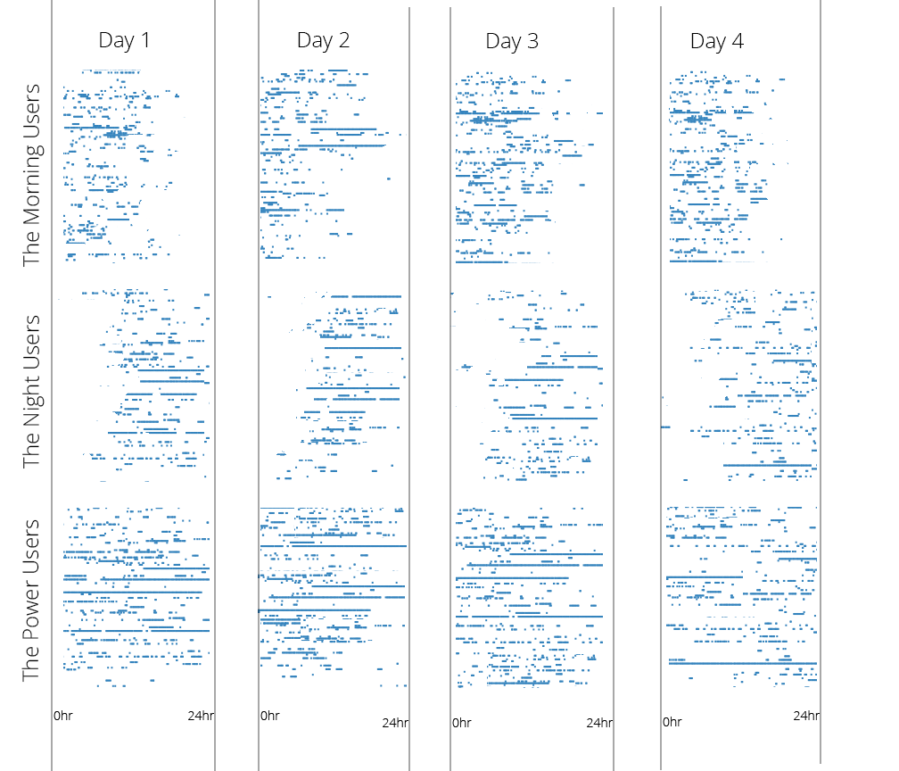

Does Facebook Know When We Sleep?
How seemingly innocuous features can violate user privacy
Due to the aggressive nature of facebook's notifications and its notorious addictiveness, many of us wake up and check facebook and check it sometime before bed. Can we draw insights from this data beyond when our friends are online?
Can we draw insights from this data beyond when our friends are online?
Facebook's Messenger app displays each of your friends' online state as online, idle, or offline. By mimicking the requests of from the facebook website, we can get this data too and track the online state of our friends. Creepy, right?

The chatbox that leaks our data. See above active and idle users.
Why?
Every day data privacy become a more relevant and important topic. Beyond the question of “who owns our data?” is “how can we control what we give away?” Often modern people unwittingly trade privacy for trivial rewards and features. Even the smallest of features can leak potentially sensitive data. In doing this project we hope to raise awareness about privacy.
Phase 1
Just a screenshot, not interactive. On the x axis is the unix time stamp of each data point. The y axis represents individual users. The time starts around 4pm and ends 9pm the next day.
Group Members
Alex Roman
Bodey Provansal
Ido Kinel
Layout of Visualization
Note: These are rasterized images, not interactive JS-defined d3 layouts for the time being.
CS165: Data Programming for Visualization in collaboration with collaboration with Suresh K Lodha and Lev Stefanovich. Spring '16
Main scrollable visualization showing multiple days of data
"Stacked" view showing multiple days (w/ intent of comparing different user-classes)
Individual view on click
Main layout
Shows multiple days of data
Secondary layout
This is a breakdown of users over a number of days. It groups them into night owls, early birds and power users.
Interactive Variables
Time
Individual users
Groups of users. e.g night vs morning people
Data Sources
The data is retrieved from an unofficial facebook API. The accuracy of the data isn't questionable because it's directly retrieved from facebook.
To collect it we use this script
Contributions and Roles
Austin
Visualization Developer; Initializing the vis, adaptation to compressed data, transitions, tooltips, zooming.
Ido
Visualization Developer; Adding to main vis, intitalization of secondary vis, live axis, scrolling 'window'.
Alex
Data Maester; collection, cleaner, queries, classification. Designer; warden of CSS and beautification. Visualzation Developer; as needed.
Privacy
While this is within facebook's terms of service, this sort of data can be abused and even be dangerous. The notion that you can track when your friends are online is both interesting and extremely creepy. While this is public data, privacy and anonymization are an important concern for this project.
The inspiration for this project is a passion and advocacy for online privacy. Features like "who's online" seem simple but can easily betray sensitive information to a determined individual. By diving deeper and giving meaning to this data I hope to raise awareness about privacy.